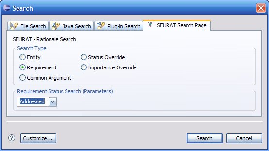
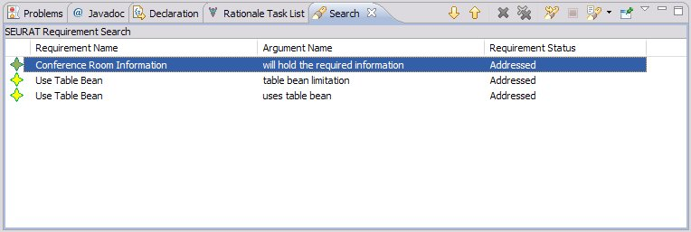

Find Requirements
The Find Requirements query lets the user look for requirements by their status.
For example, they could get a list of all the violated requirements or all the
satisfied requirements. The user selects the type using the display shown in
the following figure. The list of requirements is shown in the next figure.

